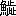

Aozora work 056043
Public-domain Japanese literature
ゆく雲
ゆくくも
- First published
- 「太陽」1895（明治28）年5月号
- Aozora release
- Orthography
- 新字旧仮名
- Edition
- にごりえ・たけくらべ
- Publisher
- 新潮文庫、新潮社
- Source
- Aozora Bunko card
Learner profile
Difficulty statistics
Unavailablescore withheld as an outlier
Model blue-sora-difficulty-v1 · status: outlier
- Words
- 5,661
- Characters
- 9,147
- Sentences
- 17
- Average sentence
- 333.0 words
- Unique words
- 1,393
- Unique kanji
- 770
- Single-use words
- 875 · 62.8%
- Single-use kanji
- 359
- Lexical rarity
- 30.9 · weight 55%
- Kanji rarity
- 57.7 · weight 25%
- Sentence complexity
- 100.0 · weight 20%
- Lexical surprisal
- 2.928
- Kanji surprisal
- 2.943
Online reader
Read here
上#
酒折の宮、山梨の岡、塩山、裂石、さし手の名も都人の耳に聞きなれぬは、小仏ささ子の難処を越して猿橋のながれに眩めき、鶴瀬、駒飼見るほどの里もなきに、勝沼の町とても東京にての場末ぞかし、甲府はさすがに大厦高楼、躑躅が崎の城跡など見る処のありとは言へど、汽車の便りよき頃にならば知らず、こと更の馬車腕車に一昼夜をゆられて、いざ恵林寺の桜見にといふ人はあるまじ、故郷なればこそ年々の夏休みにも、人は箱根伊香保ともよふし立つる中を、我れのみ一人あし曳の山の甲斐に峯のしら雲あとを消すことさりとは是非もなけれど、今歳この度みやこを離れて八王子に足をむける事これまでに覚えなき愁らさなり。
養父清左衛門、去歳より何処※処［＃「鼾のへん－自－田」の「一」に代えて「二」、U+4E93、152-10］からだに申分ありて寐つ起きつとの由は聞きしが、常日頃すこやかの人なれば、さしての事はあるまじと医者の指図などを申やりて、この身は雲井の鳥の羽がひ自由なる書生の境界に今しばしは遊ばるる心なりしを、先きの日故郷よりの便りに曰く、大旦那さまことその後の容躰さしたる事は御座なく候へ共、次第に短気のまさりて我意つよく、これ一つは年の故には御座候はんなれど、随分あたりの者御機げんの取りにくく、大心配を致すよし、私など古狸の身なればとかくつくろひて一日二日と過し候へ共、筋のなきわからずやを仰せいだされ、足もとから鳥の立つやうにお急きたてなさるには大閉口に候、この中より頻に貴君様を御手もとへお呼び寄せなさりたく、一日も早く家督相続あそばさせ、楽隠居なされたきおのぞみのよし、これ然るべき事と御親類一同の御決義、私は初手から貴君様を東京へお出し申すは気に喰はぬほどにて、申しては失礼なれどいささかの学問などどうでも宜い事、赤尾の彦が息子のやうに気ちがひに成つて帰つたも見てをり候へば、もともと利発の貴君様にその気づかひはあるまじきなれど、放蕩ものにでもお成りなされては取返しがつき申さず、今の分にて嬢さまと御祝言、御家督引つぎ最はや早きお歳にはあるまじくと大賛成に候、さだめしさだめしその地には遊しかけの御用事も御座候はんそれ等を然るべく御取まとめ、飛鳥もあとを濁ごすなに候へば、大藤の大尽が息子と聞きしに野沢の桂次は了簡の清くない奴、何処やらの割前を人に背負せて逃げをつたなどとかふいふ噂があとあとに残らぬやう、郵便為替にて証書面のとほりお送り申候へども、足りずば上杉さまにて御立かへを願ひ、諸事清潔にして御帰りなさるべく、金故に恥ぢをお掻きなされては金庫の番をいたす我等が申わけなく候、前申せし通り短気の大旦那さま頻に待ちこがれて大ぢれに御座候へば、その地の御片つけすみ次第、一日もはやくと申納候。六蔵といふ通ひ番頭の筆にてこの様の迎ひ状いやとは言ひがたし。
家に生抜きの我れ実子にてもあらば、かかる迎へのよしや十度十五たび来たらんとも、おもひ立ちての修業なれば一ト廉の学問を研かぬほどは不孝の罪ゆるし給へとでもいひやりて、その我ままの徹らぬ事もあるまじきなれど、愁らきは養子の身分と桂次はつくづく他人の自由を羨やみて、これからの行く末をも鎖りにつながれたるやうに考へぬ。
七つのとしより実家の貧を救はれて、生れしままなれば素跣足の尻きり半纏に田圃へ弁当の持はこびなど、松のひでを燈火にかへて草鞋うちながら馬士歌でもうたふべかりし身を、目鼻だちの何処やらが水子にて亡せたる総領によく似たりとて、今はなき人なる地主の内儀に可愛がられ、はじめはお大尽の旦那と尊びし人を、父上と呼ぶやうに成りしはその身の幸福なれども、幸福ならぬ事おのづからその中にもあり、お作といふ娘の桂次よりは六つの年少にて十七ばかりになる無地の田舎娘をば、どうでも妻にもたねば納まらず、国を出るまではさまで不運の縁とも思はざりしが、今日この頃は送りこしたる写真をさへ見るに物うく、これを妻に持ちて山梨の東郡に蟄伏する身かと思へば人のうらやむ造酒家の大身上は物のかずならず、よしや家督をうけつぎてからが親類縁者の干渉きびしければ、我が思ふ事に一銭の融通も叶ふまじく、いはば宝の蔵の番人にて終るべき身の、気に入らぬ妻までとは弥々の重荷なり、うき世に義理といふ柵みのなくば、蔵を持ぬしに返し長途の重荷を人にゆづりて、我れはこの東京を十年も二十年も今すこしも離れがたき思ひ、そは何故と問ふ人のあらば切りぬけ立派に言ひわけの口上もあらんなれど、つくろひなき正の処ここもとに唯一人すててかへる事のをしくをしく、別れては顔も見がたき後を思へば、今より胸の中もやくやとして自ら気もふさぐべき種なり。
桂次が今をるここ許は養家の縁に引かれて伯父伯母といふ間がら也、はじめてこの家へ来たりしは十八の春、田舎縞の着物に肩縫あげをかしと笑はれ、八つ口をふさぎて大人の姿にこしらへられしより二十二の今日までに、下宿屋住居を半分と見つもりても出入り三年はたしかに世話をうけ、伯父の勝義が性質の気むづかしい処から、無敵にわけのわからぬ強情の加減、唯々女房にばかり手やはらかなる可笑しさも呑込めば、伯母なる人が口先ばかりの利口にて誰れにつきても根からさつぱり親切気のなき、我欲の目当てが明らかに見えねば笑ひかけた口もとまで結んで見せる現金の様子まで、度々の経験に大方は会得のつきて、この家にあらんとには金づかひ奇麗に損をかけず、表むきは何処までも田舎書生の厄介者が舞ひこみて御世話に相成るといふこしらへでなくては第一に伯母御前が御機嫌むづかし、上杉といふ苗字をば宜いことにして大名の分家と利かせる見得ぼうの上なし、下女には奥様といはせ、着物は裾のながいを引いて、用をすれば肩がはるといふ、三十円どりの会社員の妻がこの形粧にて繰廻しゆく家の中おもへばこの女が小利口の才覚ひとつにて、良人が箔の光つて見ゆるやら知らねども、失敬なは野沢桂次といふ見事立派の名前ある男を、かげに廻りては家の書生がと安々こなされて、御玄関番同様にいはれる事馬鹿らしさの頂上なれば、これのみにても寄りつかれぬ価値はたしかなるに、しかもこの家の立はなれにくく、心わるきまま下宿屋あるきと思案をさだめても二週間と訪問を絶ちがたきはあやし。
十年ばかり前にうせたる先妻の腹にぬひと呼ばれて、今の奥様には継なる娘あり、桂次がはじめて見し時は十四か三か、唐人髷に赤き切れかけて、姿はおさなびたれども母のちがふ子は何処やらをとなしく見ゆるものと気の毒に思ひしは、我れも他人の手にて育ちし同情を持てばなり、何事も母親に気をかね、父にまで遠慮がちなれば自づから詞かずも多からず、一目に見わたした処では柔和しい温順の娘といふばかり、格別利発ともはげしいとも人は思ふまじ、父母そろひて家の内に籠りゐにても済むべき娘が、人目に立つほど才女など呼ばるるは大方お侠の飛びあがりの、甘やかされの我ままの、つつしみなき高慢より立つ名なるべく、物にはばかる心ありて万ひかえ目にと気をつくれば、十が七に見えて三分の損はあるものと桂次は故郷のお作が上まで思ひくらべて、いよいよおぬひが身のいたましく、伯母が高慢がほはつくづくと嫌やなれども、あの高慢にあの温順なる身にて事なく仕へんとする気苦労を思ひやれば、せめては傍近くに心ぞへをも為し、慰めにも為りてやりたしと、人知らば可笑かるべき自ぼれも手伝ひて、おぬひの事といへば我が事のように喜びもし怒りもして過ぎ来つるを、見すてて我れ今故郷にかへらば残れる身の心ぼそさいかばかりなるべき、あはれなるは継子の身分にして、俯甲斐ないものは養子の我れと、今更のやうに世の中のあぢきなきを思ひぬ。
中#
まま母育ちとて誰れもいふ事なれど、あるが中にも女の子の大方すなほに生たつは稀なり、少し世間並除け物の緩い子は、底意地はつて馬鹿強情など人に嫌はるる事この上なし、小利口なるは狡るき性根をやしなうて面かぶりの大変ものに成もあり、しやんとせし気性ありて人間の質の正直なるは、すね者の部類にまぎれてその身に取れば生涯の損おもふべし、上杉のおぬひと言ふ娘、桂次がのぼせるだけ容貌も十人なみ少しあがりて、よみ書き十露盤それは小学校にて学びしだけのことは出来て、我が名にちなめる針仕事は袴の仕立までわけなきよし、十歳ばかりの頃までは相応に悪戯もつよく、女にしてはと亡き母親に眉根を寄せさして、ほころびの小言も十分に聞きし物なり、今の母は父親が上役なりし人の隠し妻とやらお妾とやら、種々曰くのつきし難物のよしなれども、持ねばならぬ義理ありて引うけしにや、それとも父が好みて申受しか、その辺たしかならねど勢力おさおさ女房天下と申やうな景色なれば、まま子たる身のおぬひがこの瀬に立ちて泣くは道理なり、もの言へば睨まれ、笑へば怒られ、気を利かせれば小ざかしと云ひ、ひかえ目にあれば鈍な子と叱かられる、二葉の新芽に雪霜のふりかかりて、これでも延びるかと押へるやうな仕方に、堪へて真直ぐに延びたつ事人間わざには叶ふまじ、泣いて泣いて泣き尽くして、訴へたいにも父の心は鉄のやうに冷えて、ぬる湯一杯たまはらん情もなきに、まして他人の誰れにか慨つべき、月の十日に母さまが御墓まゐりを谷中の寺に楽しみて、しきみ線香それぞれの供へ物もまだ終らぬに、母さま母さま私を引取つて下されと石塔に抱きつきて遠慮なき熱涙、苔のしたにて聞かば石もゆるぐべし、井戸がはに手を掛て水をのぞきし事三四度に及びしが、つくづく思へば無情とても父様は真実のなるに、我れはかなく成りて宜からぬ名を人の耳に伝へれば、残れる耻は誰が上ならず、勿躰なき身の覚悟と心の中に詫言して、どうでも死なれぬ世に生中目を明きて過ぎんとすれば、人並のうい事つらい事、さりとはこの身に堪へがたし、一生五十年めくらに成りて終らば事なからんとそれよりは一筋に母様の御機嫌、父が気に入るやう一切この身を無いものにして勤むれば家の内なみ風おこらずして、軒ばの松に鶴が来て巣をくひはせぬか、これを世間の目に何と見るらん、母御は世辞上手にて人を外らさぬ甘さあれば、身を無いものにして闇をたどる娘よりも、一枚あがりて、評判わるからぬやら。
お縫とてもまだ年わかなる身の桂次が親切はうれしからぬに非ず、親にすら捨てられたらんやうな我が如きものを、心にかけて可愛がりて下さるは辱けなき事と思へども、桂次が思ひやりに比べては遥かに落つきて冷やかなる物なり、おぬひさむ我れがいよいよ帰国したと成つたならば、あなたは何と思ふて下さろう、朝夕の手がはぶけて、厄介が減つて、楽になつたとお喜びなさろうか、それとも折ふしはあの話し好きの饒舌のさわがしい人が居なくなつたで、少しは淋しい位に思ひ出して下さろうか、まあ何と思ふてお出なさるとこんな事を問ひかけるに、仰しやるまでもなく、どんなに家中が淋しく成りましよう、東京にお出あそばしてさへ、一ト月も下宿に出て入らつしやる頃は日曜が待どほで、朝の戸を明けるとやがて御足おとが聞えはせぬかと存じまする物を、お国へお帰りになつては容易に御出京もあそばすまじければ、又どれほどの御別れに成りまするやら、それでも鉄道が通ふやうに成りましたら度々御出あそばして下さりませうか、そうならば嬉しけれどと言ふ、我れとても行きたくてゆく故郷でなければ、此処に居られる物なら帰るではなく、出て来られる都合ならば又今までのやうにお世話に成りに来まする、成るべくはちよつとたち帰りに直ぐも出京したきものと軽くいへば、それでもあなたは一家の御主人さまに成りて采配をおとりなさらずは叶ふまじ、今までのやうなお楽の御身分ではいらつしやらぬ筈と押へられて、されば誠に大難に逢ひたる身と思しめせ。
我が養家は大藤村の中萩原とて、見わたす限りは天目山、大菩薩峠の山々峰々垣をつくりて、西南にそびゆる白妙の富士の嶺は、をしみて面かげを示めさねども、冬の雪おろしは遠慮なく身をきる寒さ、魚といひては甲府まで五里の道を取りにやりて、やうやう 
何がこんな身分うら山しい事か、ここで我れが幸福といふを考へれば、帰国するに先だちてお作が頓死するといふ様なことにならば、一人娘のことゆゑ父親おどろいて暫時は家督沙汰やめになるべく、然るうちに少々なりともやかましき財産などの有れば、みすみす他人なる我れに引わたす事をしくも成るべく、又は縁者の中なる欲ばりども唯にはあらで運動することたしかなり、その暁に何かいささか仕損なゐでもこしらゆれば我れは首尾よく離縁になりて、一本立の野中の杉ともならば、それよりは我が自由にてその時に幸福といふ詞を与へ給へと笑ふに、おぬひ惘れて貴君はその様の事正気で仰しやりますか、平常はやさしい方と存じましたに、お作様に頓死しろとは蔭ながらの嘘にしろあんまりでござります、お可愛想なことをと少し涙ぐんでお作をかばふに、それは貴嬢が当人を見ぬゆゑ可愛想とも思ふか知らねど、お作よりは我れの方を憐れんでくれて宜い筈、目に見えぬ縄につながれて引かれてゆくやうな我れをば、あなたは真の処何とも思ふてくれねば、勝手にしろといふ風で我れの事とては少しも察してくれる様子が見えぬ、今も今居なくなつたら淋しかろうとお言ひなされたはほんの口先の世辞で、あんな者は早く出てゆけと箒に塩花が落ちならんも知らず、いい気になつて御邪魔になつて、長居をして御世話さまに成つたは、申訳がありませぬ、いやで成らぬ田舎へは帰らねばならず、情のあろうと思ふ貴嬢がそのやうに見すてて下されば、いよいよ世の中は面白くないの頂上、勝手にやつて見ませうと態とすねて、むつと顔をして見せるに、野沢さんは本当にどうか遊していらつしやる、何がお気に障りましたのとお縫はうつくしい眉に皺を寄せて心の解しかねる躰に、それは勿論正気の人の目からは気ちがひと見える筈、自分ながら少し狂つていると思ふ位なれど、気ちがひだとて種なしに間違ふ物でもなく、いろいろの事が畳まつて頭脳の中がもつれてしまふから起る事、我れは気違ひか熱病か知らねども正気のあなたなどが到底おもひも寄らぬ事を考へて、人しれず泣きつ笑ひつ、何処やらの人が子供の時うつした写真だといふあどけないのを貰つて、それを明けくれに出して見て、面と向つては言はれぬ事を並べて見たり、机の引出しへ叮嚀にしまつて見たり、うわ言をいつたり夢を見たり、こんな事で一生を送れば人は定めし大白痴と思ふなるべく、そのやうな馬鹿になつてまで思ふ心が通じず、なき縁ならば切めては優しい詞でもかけて、成仏するやうにしてくれたら宜さそうの事を、しらぬ顔をして情ない事を言つて、お出がなくば淋しかろう位のお言葉は酷いではなきか、正気のあなたは何と思ふか知らぬが、狂気の身にして見ると随分気づよいものと恨まれる、女といふものはもう少しやさしくても好い筈ではないかと立てつづけの一ト息に、おぬひは返事もしかねて、私しは何と申てよいやら、不器用なればお返事のしやうも分らず、唯々こころぼそく成りますとて身をちぢめて引退くに、桂次拍子ぬけのしていよいよ頭の重たくなりぬ。
上杉の隣家は何宗かの御梵刹さまにて寺内広々と桃桜いろいろ植わたしたれば、此方の二階より見おろすに雲は棚曳く天上界に似て、腰ごろもの観音さま濡れ仏にておはします御肩のあたり膝のあたり、はらはらと花散りこぼれて前に供へし樒の枝につもれるもをかしく、下ゆく子守りが鉢巻の上へ、しばしやどかせ春のゆく衛と舞ひくるもみゆ、かすむ夕べの朧月よに人顔ほのぼのと暗く成りて、風少しそふ寺内の花をば去歳も一昨年もそのまへの年も、桂次此処に大方は宿を定めて、ぶらぶらあるきに立ならしたる処なれば、今歳この度とりわけて珍らしきさまにもあらぬを、今こん春はとても立かへり蹈べき地にあらずと思ふに、ここの濡れ仏さまにも中々の名残をしまれて、夕げ終りての宵々家を出ては御寺参り殊勝に、観音さまには合掌を［＃「合掌を」は底本では「合唱を」］申て、我が恋人のゆく末を守りたまへと、お志しのほどいつまでも消えねば宜いが。
下#
我れのみ一人のぼせて耳鳴りやすべき桂次が熱ははげしけれども、おぬひと言ふもの木にて作られたるやうの人なれば、まづは上杉の家にやかましき沙汰もおこらず、大藤村にお作が夢ものどかなるべし、四月の十五日帰国に極まりて土産物など折柄日清の戦争画、大勝利の袋もの、ぱちん羽織の紐、白粉かんざし桜香の油、縁類広ければとりどりに香水、石鹸の気取りたるも買ふめり、おぬひは桂次が未来の妻にと贈りものの中へ薄藤色の襦袢の襟に白ぬきの牡丹花の形あるをやりけるに、これを眺めし時の桂次が顔、気の毒らしかりしと後にて下女の竹が申き。
桂次がもとへ送りこしたる写真はあれども、秘しがくしに取納めて人には見せぬか、それとも人しらぬ火鉢の灰になり終りしか、桂次ならぬもの知るによしなけれど、さる頃はがきにて処用と申こしたる文面は男の通りにて名書きも六蔵の分なりしかど、手跡大分あがりて見よげに成りしと父親の自まんより、娘に書かせたる事論なしとここの内儀が人の悪き目にて睨みぬ、手跡によりて人の顔つきを思ひやるは、名を聞いて人の善悪を判断するやうなもの、当代の能書に業平さまならぬもおはしますぞかし、されども心用ひ一つにて悪筆なりとも見よげのしたため方はあるべきと、達者めかして筋もなき走り書きに人よみがたき文字ならば詮なし、お作の手はいかなりしか知らねど、此処の内儀が目の前にうかびたる形は、横巾ひろく長つまりし顔に、目鼻だちはまづくもあるまじけれど、うすくして首筋くつきりとせず、胴よりは足の長い女とおぼゆると言ふ、すて筆ながく引いて見ともなかりしか可笑し、桂次は東京に見てさへ醜るい方では無いに、大藤村の光る君帰郷といふ事にならば、機場の女が白粉のぬりかた思はれると此処にての取沙汰、容貌のわるい妻を持つぐらゐ我慢もなる筈、水呑みの小作が子として一足飛のお大尽なればと、やがては実家をさへ洗はれて、人の口さがなし伯父伯母一つになつて嘲るやうな口調を、桂次が耳に入らぬこそよけれ、一人気の毒と思ふはお縫なり。
荷物は通運便にて先へたたせたれば残るは身一つに軽々しき桂次、今日も明日もと友達のもとを馳せめぐりて何やらん用事はあるものなり、僅かなる人目の暇を求めてお縫が袂をひかえ、我れは君に厭はれて別るるなれども夢いささか恨む事をばなすまじ、君はおのづから君の本地ありてその島田をば丸曲にゆひかへる折のきたるべく、うつくしき乳房を可愛き人に含まする時もあるべし、我れは唯だ君の身の幸福なれかし、すこやかなれかしと祈りてこの長き世をば尽さんには随分とも親孝行にてあられよ、母御前の意地わるに逆らふやうの事は君として無きに相違なけれどもこれ第一に心がけ給へ、言ふことは多し、思ふことは多し、我れは世を終るまで君のもとへ文の便りをたたざるべければ、君よりも十通に一度の返事を与へ給へ、睡りがたき秋の夜は胸に抱いてまぼろしの面影をも見んと、このやうの数々を並らべて男なきに涙のこぼれるに、ふり仰向いてはんけちに顔を拭ふさま、心よわげなれど誰れもこんな物なるべし、今から帰るといふ故郷の事養家のこと、我身の事お作の事みなから忘れて世はお縫ひとりのやうに思はるるも闇なり、この時こんな場合にはかなき女心の引入られて、一生消えぬかなしき影を胸にきざむ人もあり、岩木のやうなるお縫なれば何と思ひしかは知らねども、涙ほろほろこぼれて一ト言もなし。
春の夜の夢のうき橋、と絶えする横ぐもの空に東京を思ひ立ちて、道よりもあれば新宿までは腕車がよしといふ、八王子までは汽車の中、をりればやがて馬車にゆられて、小仏の峠もほどなく越ゆれば、上野原、つる川、野田尻、犬目、鳥沢も過ぐれば猿はし近くにその夜は宿るべし、巴峡のさけびは聞えぬまでも、笛吹川の響きに夢むすび憂く、これにも腸はたたるべき声あり、勝沼よりの端書一度とどきて四日目にぞ七里の消印ある封状二つ、一つはお縫へ向けてこれは長かりし、桂次はかくて大藤村の人に成りぬ。
世にたのまれぬを男心といふ、それよ秋の空の夕日にはかに掻きくもりて、傘なき野道に横しぶきの難義さ、出あひし物はみなその様に申せどもこれみな時のはづみぞかし、波こえよとて末の松山ちぎれるもなく、男傾城ならぬ身の空涙こぼして何に成るべきや、昨日あはれと見しは昨日のあはれ、今日の我が身に為す業しげければ、忘るるとなしに忘れて一生は夢の如し、露の世といへばほろりとせしもの、はかないの上なしなり、思へば男は結髪の妻ある身、いやとても応とても浮世の義理をおもひ断つほどのことこの人この身にして叶ふべしや、事なく高砂をうたひ納むれば、即ち新らしき一対の夫婦出来あがりて、やがては父とも言はるべき身なり、諸縁これより引かれて断ちがたき絆次第にふゆれば、一人一箇の野沢桂次ならず、運よくば万の身代十万に延して山梨県の多額納税と銘うたんも斗りがたけれど、契りし詞はあとの湊に残して、舟は流れに随がひ人は世に引かれて、遠ざかりゆく事千里、二千里、一万里、此処三十里の隔てなれども心かよはずは八重がすみ外山の峰をかくすに似たり、花ちりて青葉の頃までにお縫が手もとに文三通、こと細か成けるよし、五月雨軒ばに晴れまなく人恋しき折ふし、彼方よりも数々思ひ出の詞うれしく見つる、それも過ぎては月に一二度の便り、はじめは三四度も有りけるを後には一度の月あるを恨みしが、秋蚕のはきたてとかいへるに懸りしより、二月に一度、三月に一度、今の間に半年目、一年目、年始の状と暑中見舞の交際になりて、文言うるさしとならば端書にても事は足るべし、あはれ可笑しと軒ばの桜くる年も笑ふて、隣の寺の観音様御手を膝に柔和の御相これも笑めるが如く、若いさかりの熱といふ物にあはれみ給へば、此処なる冷やかのお縫も笑くぼを頬にうかべて世に立つ事はならぬか、相かはらず父様の御機嫌、母の気をはかりて、我身をない物にして上杉家の安穏をはかりぬれど、ほころびが切れてはむづかし。
Source and edition notes
底本：「にごりえ・たけくらべ」新潮文庫、新潮社
1949（昭和24）年6月30日発行
2003（平成15）年1月10日116刷改版
2008（平成20）年6月10日128刷
初出：「太陽」
1895（明治28）年5月号
※このファイルには、以下の青空文庫のテキストを、上記底本にそって修正し、組み入れました。
「ゆく雲」（入力：青空文庫、校正：米田進、小林繁雄）
※送りがな、振りがな、漢字の使い方の不統一は、底本通りです。
※底本巻末の編者による語注は省略しました。
入力：酔いどれ狸
校正：岡村和彦
2014年10月13日作成
青空文庫作成ファイル：
このファイルは、インターネットの図書館、青空文庫（http://www.aozora.gr.jp/）で作られました。入力、校正、制作にあたったのは、ボランティアの皆さんです。